Set Up MySQL Cluster

This document preassumes that you are familiar with VirtualBox, Vagrant on Linux.
Prerequisites
- VirtualBox
- Vagrant
What to Build
- 3 Virtual Machines
- 3 MySQL instances running on the 3 VMs
- Employees Sample Database
- Data replication
IP Settings
- Master - 192.168.0.201
- Slave-1 - 192.168.0.202
- Slave-2 - 192.168.0.203
Vagrantfiles
Steps
Boot up Virtual Machines
- Use ‘vagrant up’ to boot up 3 virtual machines.
- Use ‘vagrant halt’ to power off the VMs
- Open VirtualBox GUI and change the MAC addresses of the 3 VMs
Make sure the 3 VMs have different MAC addresses
Install MySQL Server
Install MySQL server on the 3 VMs separately.
The guide
How To Install MySQL on CentOS 8 can be referenced.
sudo dnf install mysql-server
sudo systemctl start mysqld.service
sudo systemctl status mysqld
sudo systemctl enable mysqld
sudo mysql_secure_installation
mysqladmin -u root -p version
mysql -u root -p
Configure MySQL Server on Master VM
- Edit MySQL configuration file ‘/etc/my.cnf’. Add the below configuration.
[mysqld]
log-bin=mysql-bin # Optinal
server-id=1 # Mustbind-address = 0.0.0.0 # Must
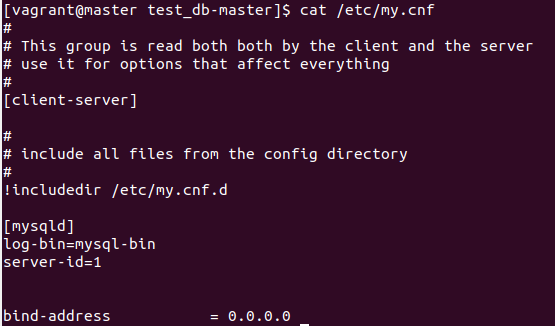
- Restart MySQL server service
System command:
sudo systemctl restart mysqld
- Create user for syncing data
MySQL commands:
CREATE USER 'repl'@'192.168.0.%' IDENTIFIED BY '123456';
GRANT REPLICATION SLAVE ON *.* TO 'repl'@'192.168.0.%';
FLUSH PRIVILEGES;
- Check master status
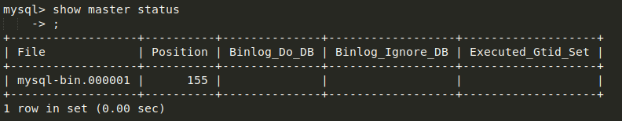
Configure MySQL Server on Slave VM
- Edit MySQL configuration file ‘/etc/my.cnf’. Add the below configuration.
[mysqld]
server-id=2
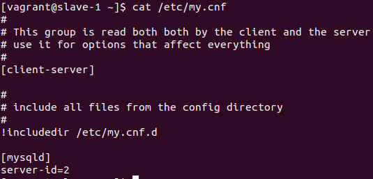
- Restart MySQL server service
System command:
sudo systemctl restart mysqld
- Configure syncronization
MySQL command:
change master to master_host='192.168.0.201', master_user='repl', master_password='123456', master_log_file='mysql-bin.000001', master_log_pos=155;
start slave;
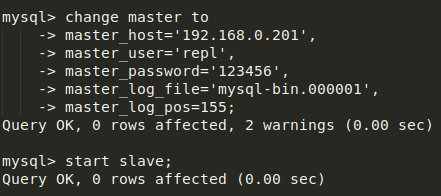
- Check slave status
Both Slave_IO_Running and Slave_SQL_Running should be ‘Yes’.
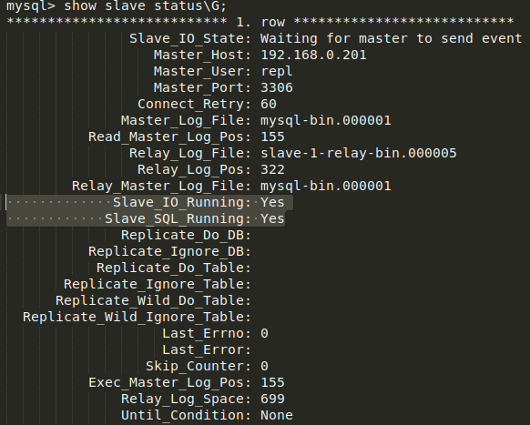
Import the ‘Employees Sample Database’
- Sync folder
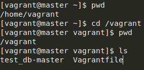
The tool rsync can be used for data syncronization.
- Download the ‘Employees Sample Database’
Download the zip file from Employees DB on GitHub, unzip the file and put the unzipped folder into the master VM folder of the host machine.
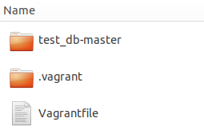
- Reload the master VM
Here we use the simple way, just reload the master VM.
- Import the database
On master VM:
cd test_db-master/
mysql -u root -p -t < employees.sql
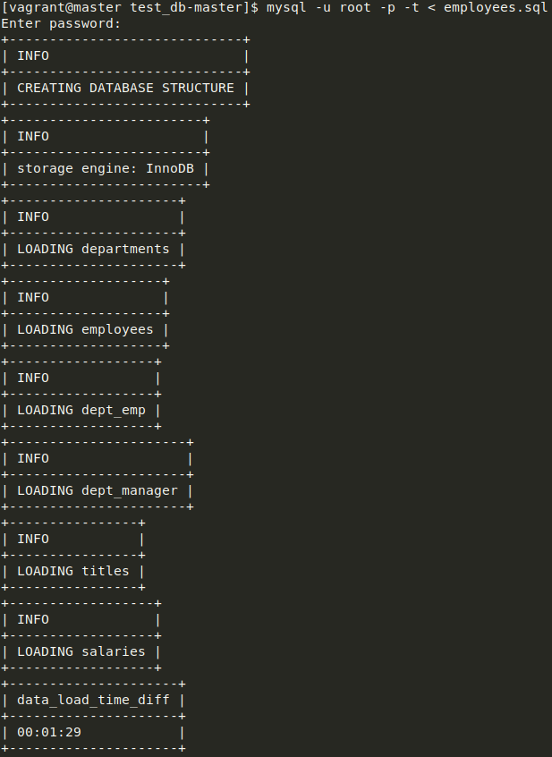
- Validating the Employee Data
time mysql -u root -p -t < test_employees_sha.sql
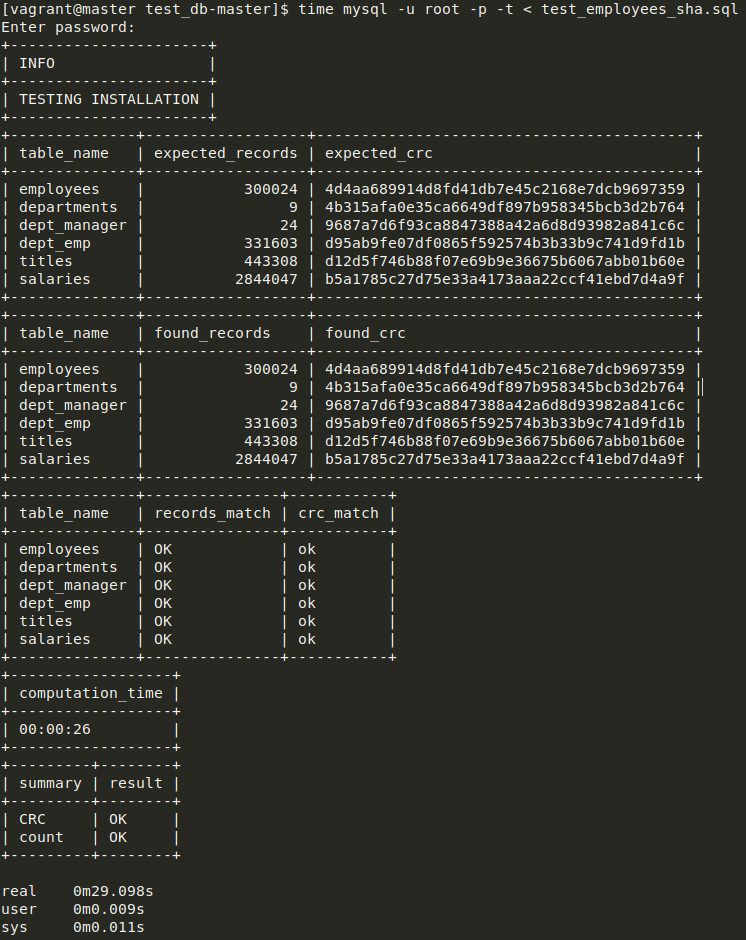
- Check data on slaves
Now you can see all the data has been replicated on the slave servers.
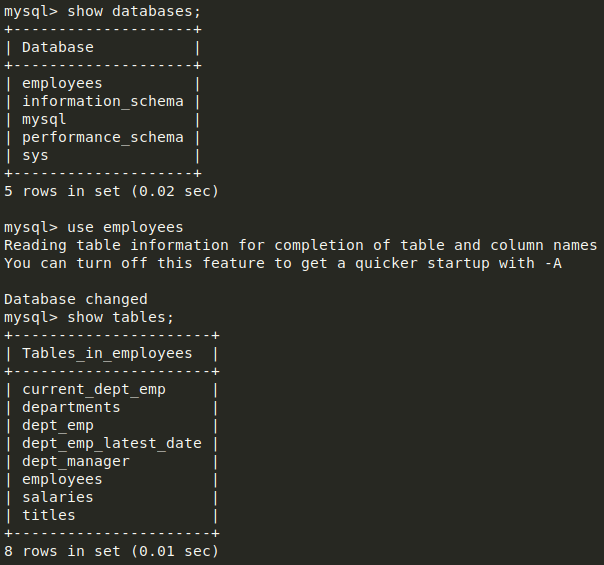 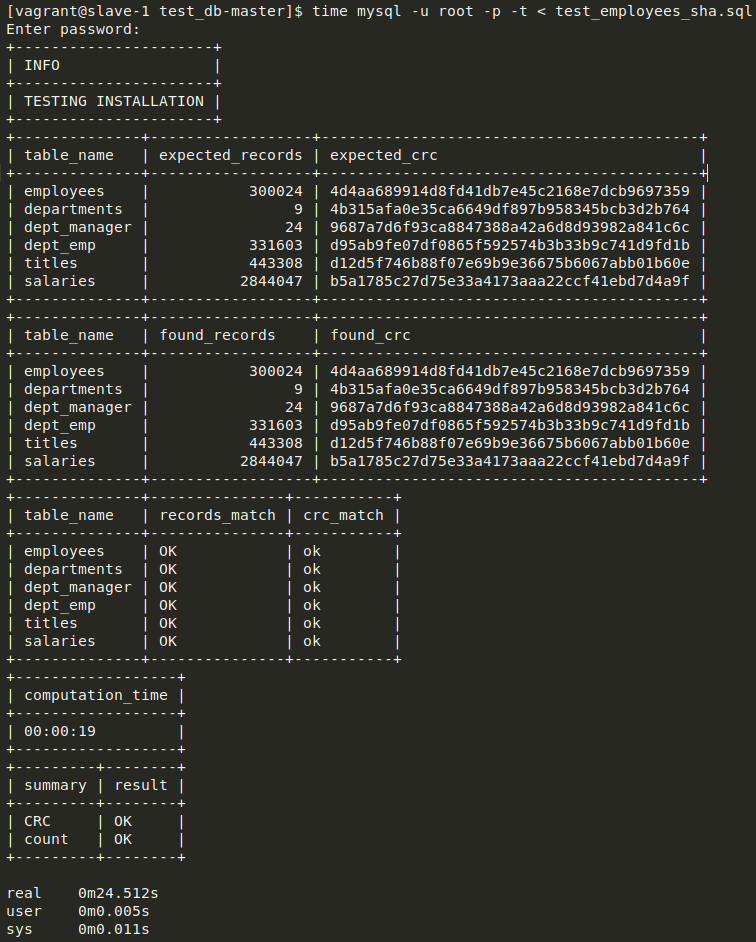
Errors
Slave_IO_Running: No
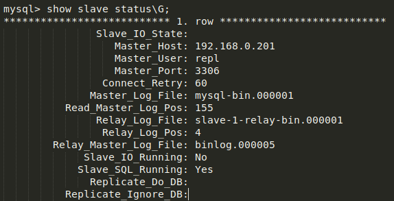
Possible reasons:
- Forget to restart mysqld service
- Forget to bind address.
Solution:
- Restart mysqld service
- Use netstat to check the status, i.e.

Links
Synced Folders
How To Install MySQL on CentOS 8
Employees Sample Database
MySQL Cluster COnfiguration
How To Import SQL File